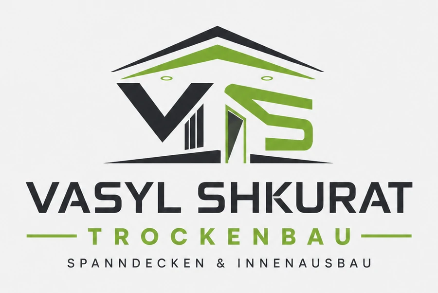
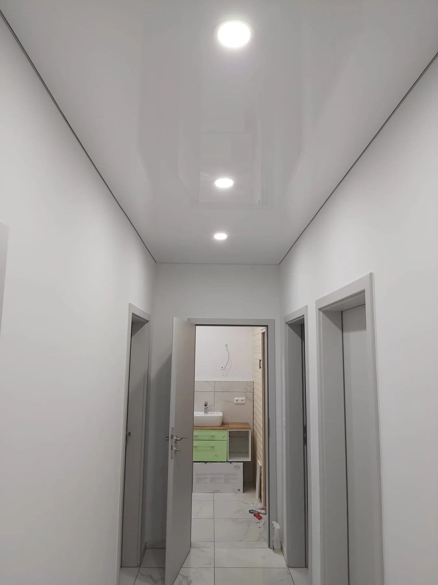
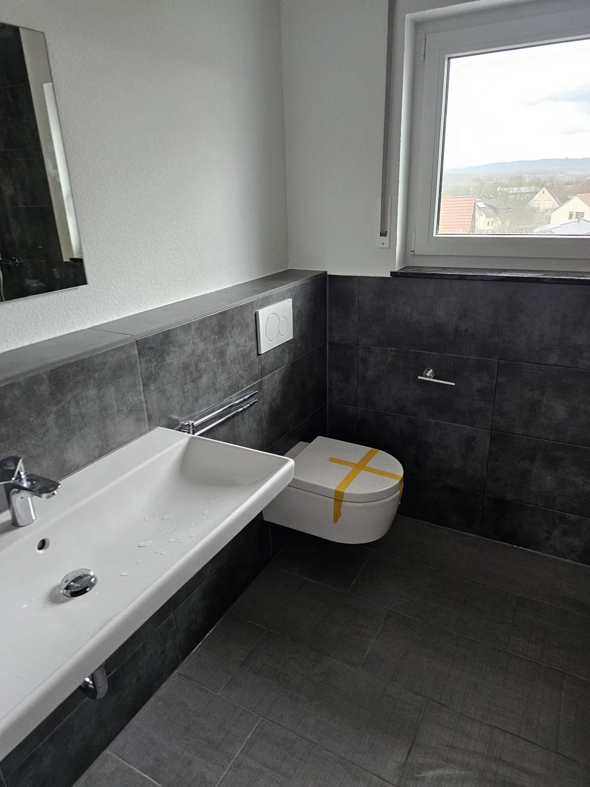
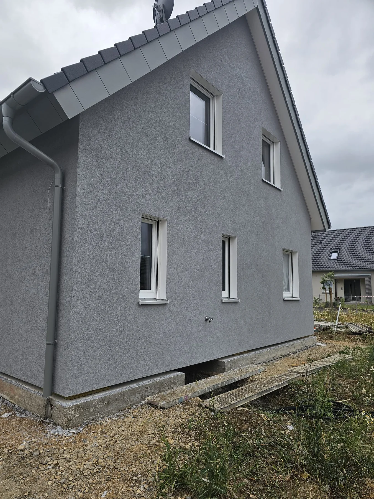
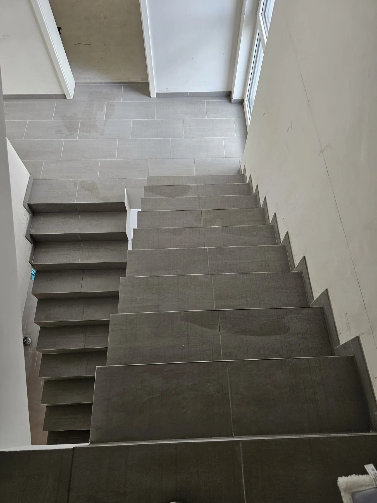

Saubere Kommunikation
Direkter Kontakt, klare Rückmeldung und eine realistische Einschätzung vor Arbeitsbeginn.
Weidenbach & Umgebung
Vasyl Shkurat Trockenbau steht für saubere Decken, präzise Innenarbeiten und ehrliche Handwerksqualität – persönlich erreichbar, klar in der Absprache und sauber in der Umsetzung.

Direkter Kontakt, klare Rückmeldung und eine realistische Einschätzung vor Arbeitsbeginn.
Besonders Spanndecken geben Räumen schnell eine moderne, glatte und hochwertige Wirkung.
Innenarbeiten, Fassaden, Böden, Fliesen und weitere Renovierungsarbeiten aus einer Hand.
Projektgalerie
Echte Eindrücke aus Innenausbau, Fliesenarbeiten, Fassaden und Spanndecken zeigen, wie sauber und vielseitig gearbeitet wird. So sehen Besucher direkt, welche Qualität sie erwarten dürfen.
Hauptleistung
Eine Spanndecke ist ideal, wenn eine alte Decke optisch nicht mehr passt, der Raum aber schnell wieder sauber, modern und repräsentativ aussehen soll. Sie kann in Wohnräumen, Büros, Fluren, Küchen oder Bädern eingesetzt werden und bringt eine sehr ruhige, glatte Oberfläche in den Raum.
Leistungsliste
Der Schwerpunkt liegt auf Spanndeckenbau. Zusätzlich sind viele Arbeiten rund ums Haus möglich – sauber gebündelt für private Kunden, Vermieter und kleinere Gewerbeflächen.
Moderne Deckenlösung für einen hochwertigen Look – ideal, wenn alte Decken verschwinden und Räume deutlich frischer wirken sollen.
Innenausbau, Wand- und Deckenkonstruktionen sowie Dämmarbeiten nach Absprache.
Saubere Putz- und Fassadenarbeiten für einen gepflegten, robusten Außenauftritt.
Frische Wandflächen, saubere Kanten und ein stimmiges Finish nach der Renovierung.
Verlegung von Bodenbelägen für Wohnräume, Flure und Arbeitsbereiche.
Fliesenarbeiten für Bad, Küche, Bodenflächen und weitere Bereiche im Innenausbau.
Montagearbeiten für Fenster und Türen im Rahmen von Sanierung und Ausbau.
Außenflächen, Wege und Einfahrten nach individueller Besichtigung.
Montagearbeiten nach Absprache. Elektrische Anschlüsse erfolgen durch einen passenden Fachbetrieb.
Ausgeführte Arbeiten
Von modernen Spanndecken über Fliesenarbeiten bis zur Fassade: Vasyl Shkurat Trockenbau übernimmt Renovierungs- und Ausbauarbeiten sauber, zuverlässig und mit Blick für ein ordentliches Finish.




Projektvideos
Die kurzen Videos zeigen Details aus Spanndecken, Innenausbau und Renovierung. Besucher können sich die Clips nacheinander ansehen und bekommen direkt ein Gefühl für Material, Finish und saubere Ausführung.
Über den Betrieb
Vasyl ist seit mehreren Jahren in Deutschland und baut sich hier mit ehrlicher Arbeit, Zuverlässigkeit und persönlichem Einsatz seinen Namen auf. Kunden bekommen keinen anonymen Großbetrieb, sondern einen Ansprechpartner, der selbst hinschaut, mitdenkt und die Arbeit ernst nimmt.
„Saubere Arbeit beginnt bei sauberer Absprache.“
Vasyl Shkurat TrockenbauAblauf
Kurz erklären, worum es geht: Spanndecke, Renovierung, Fassade oder Innenarbeit.
Maße, Zustand, Material und Machbarkeit werden direkt am Objekt eingeschätzt.
Leistungsumfang, Termin und Ausführung werden sauber abgestimmt.
Die Arbeit wird zuverlässig erledigt – mit Blick auf Details und ein ordentliches Ergebnis.
Kurz geklärt
Der klare Schwerpunkt ist Spanndeckenbau. Zusätzlich werden Trockenbau, Innenarbeiten, Fassaden- und Renovierungsarbeiten übernommen.
Elektroarbeiten werden nicht direkt angeboten. Wenn bei Spanndecken Beleuchtung oder Anschlüsse relevant sind, sollte ein Elektro-Fachbetrieb eingebunden werden.
Der Betrieb sitzt in 91746 Weidenbach und ist für Anfragen aus der Umgebung erreichbar.
Am besten kurz anrufen oder per E-Mail schreiben. Danach wird geklärt, ob eine Besichtigung sinnvoll ist.
Kontakt
Für Spanndecken, Trockenbau, Fassade und Arbeiten rund ums Haus: einfach anrufen, kurz schildern, was gemacht werden soll, und den nächsten Schritt abstimmen.